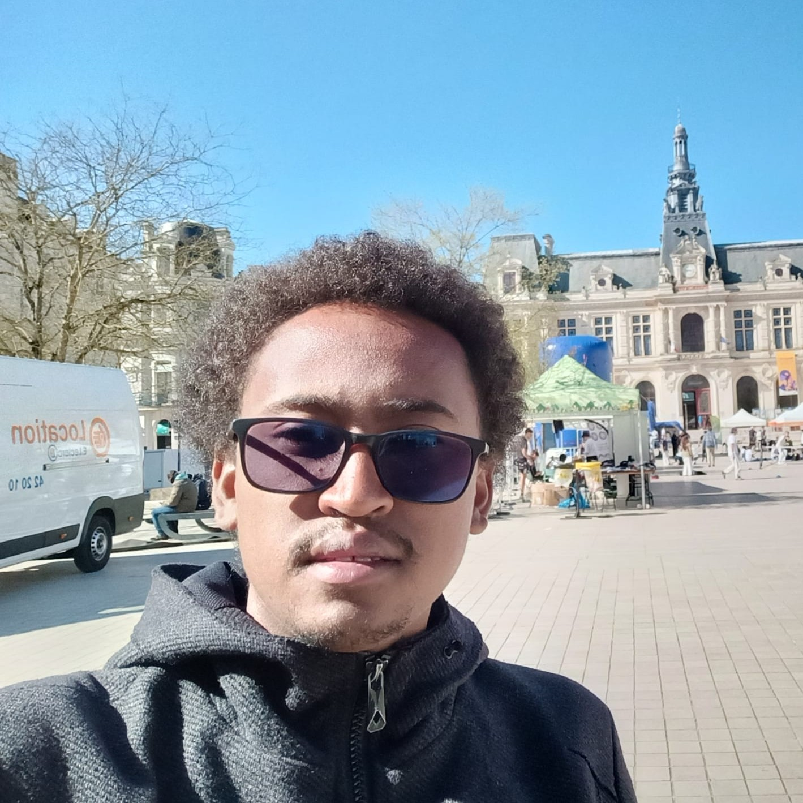

Stefana Fandresena Tabera-Tsilefa
PhD student in mathematics · University of Poitiers and University of Fianarantsoa · CIMPA Ambassador
I work on the theory of stochastic differential equations driven by α-stable processes, with applications to diffusion processes and generative models. I also model phenomena in the life sciences.
Research
My thesis and earlier work focus on stochastic modeling and its applications.
Deep learning for solving and estimating the parameters of stochastic differential equations driven by α-stable processes
α-stable processes describe phenomena with jumps and heavy tails, which Brownian motion cannot capture. My thesis aims to solve these equations and estimate their parameters with deep learning, and studies the existence of periodic solutions and their extensions.
Publications
Journal articles and conference proceedings, most recent first.
-
2025
Bayesian inference of a spatially dependent semi-markovian model with application to Madagascar COVID-19 data
PLOS ONEJournal
-
2025
Modeling and analysis of COVID-19 patients hospitalization dynamic reliability by a semi-markovian model
African Conference on Research in Computer Science and Applied Mathematics, Springer Nature SwitzerlandConference
-
2024
Spatial Markov matrices for measuring the spatial dependencies of an epidemiological spread: Case Covid-19 Madagascar
BMC Public HealthJournal
-
2022
Numerical convergence of some stochastic compartmental models in epidemiology
African Conference on Research in Computer Science and Applied MathematicsConference
Full list and citations: Google Scholar.
Talks
Presentations at congresses and conferences, most recent first.
-
2026
Score-Based Generative Modeling with Stable-driven Stochastic differential equation
Forum des jeunes mathématiciennes et mathématiciens 2026
December 2026, Nantes, France
-
2026
Physics-informed neural networks for Stable-Driven Stochastic Differential Equations
International Congress on Statistics, Stochastic Analysis, and Data Science
July 2026, Oujda, Morocco
-
2022
Numerical convergence of some stochastic compartmental models in epidemiology
African Conference on Research in Computer Science and Applied Mathematics (CARI)
October 2022, Hammamet, Tunisia
Background
Training in applied probability, and teaching at ENS Fianarantsoa.
Education
PhD in Mathematics
University of Poitiers and University of Fianarantsoa
CIMPA Research School
ENS Burundi, PDEs, modeling, simulations
Research Master in Mathematics Education and Applications Top of class
ENS Fianarantsoa, specialty applied probability
Research internship (M2)
University of Mayotte, α-stable SDEs: existence and numerical approximation
Research internship (M2)
IRD, DIDEM project, Betsiboka delta
CIMPA Research School
Tunis, mathematical biology and theoretical ecology
CIMPA Research School
Fianarantsoa, probabilistic and statistical modeling, epidemiology and environment
Master's in Mathematics Teaching
ENS Fianarantsoa
Bachelor's in Mathematics Teaching
ENS Fianarantsoa
Responsibilities and teaching
CIMPA Ambassador
International Centre for Pure and Applied Mathematics
Research officer, CONNECTER-IA project
Statistical analysis of survey data
Head of the Mathematics Bachelor's track
ENS Fianarantsoa
Part-time lecturer, ENS Fianarantsoa
Data structures and algorithms (L1), probability (L2), scientific programming (L3), functional analysis (M1)
Animath International
Training students for mathematics olympiads in Madagascar
Skills
Mathematical and technical tools I use in my work.